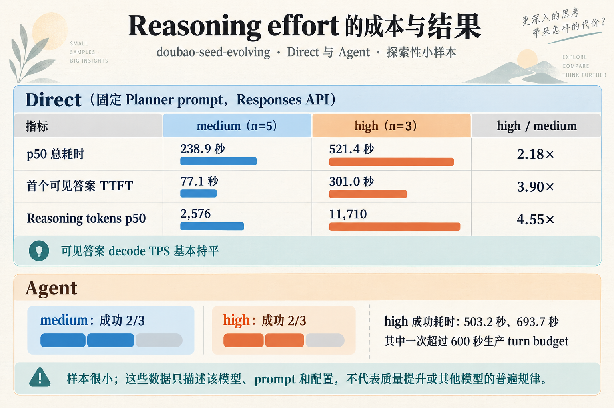
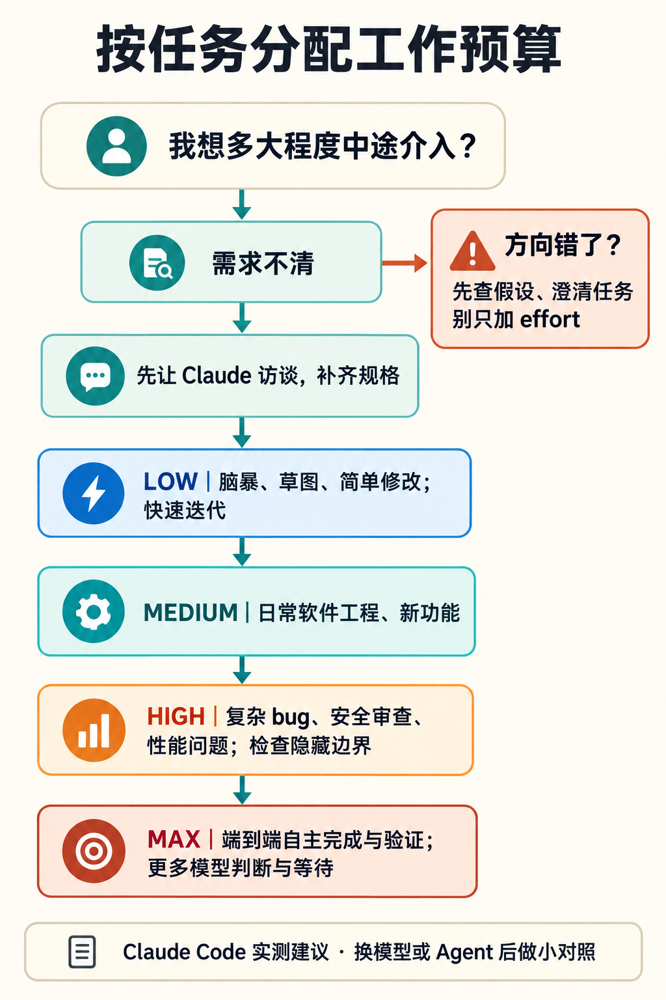

Reasoning Effort 到底在调什么？从 Claude 的实测到跨模型验证
我以前把 reasoning effort 理解成一个很直观的旋钮：档位越高，模型多想一会儿；档位越低，回答快一点。
2026 年 9 月 25 日，Thariq Shihipar 在 《Using Claude Code: Spending your effort》里分享了他的 Claude Code 实测。读完之后，我原先的理解开始松动了。文章里最让我在意的，不是“高 effort 得分更高”，而是 effort 似乎会改变模型做事的方式：它会不会自行补全需求、做多少验证、愿意替用户做多少判断。
不过，Thariq 的结论来自 Claude 模型和 Claude Code 的实验。它给了我一个新的解释，也带出一个需要认真回答的问题：reasoning effort 究竟在调模型的什么？哪些观察能推广到其他模型和 Agent？
先拆开三个容易混在一起的概念
思维链是一种生成出来的中间过程
大语言模型是逐 token 生成的。Chain-of-Thought（CoT，思维链）通常指模型在给出最终答案之前，生成一串中间步骤：拆解问题、列出条件、尝试推导，再形成答案。经典的 CoT prompting 研究发现，在提示中给出逐步推理示例，可以提升模型在某些多步任务上的表现。Wei 等人的原始论文
但“让模型写出推理步骤”和“让模型拥有更大的推理计算预算”并不是同一个开关。普通模型可以按提示生成一段看起来像推理的文字；专门训练的 reasoning model 则可能通过额外训练，学会在回答前进行更长的推演、修正策略或尝试不同路径。OpenAI 对 o1 的公开说明就把强化学习训练与 test-time compute（推理时计算）都列为提升 reasoning 表现的因素。OpenAI：Learning to reason with LLMs
思维链也不一定会完整展示给用户。有些 API 会把 reasoning tokens 作为独立用量统计，却不返回原始内容；即使能看到一段解释，也不能只凭它写得连贯，就断定它忠实记录了模型实际依赖的全部过程。关于 CoT faithfulness 的研究表明，模型给出的解释有时会遗漏影响答案的因素，甚至为错误答案补出听起来合理的理由。Lanham 等人的研究
推理时计算不只有“多写几步”
在不重新训练模型的前提下，推理阶段可以投入更多计算。最直观的方式是允许模型生成更长的 reasoning trace；其他方法还包括生成多个候选答案再筛选、逐步验证中间结果，或对不同推理路径进行搜索。
这些方法都可能增加推理时计算，但它们不是同一种算法。Snell 等人的 test-time compute 研究就分别分析了 verifier 引导的搜索，以及根据题目调整回答分布等方法，并发现最合适的策略会受模型、题目难度和计算预算影响。ICLR 2025 论文
所以，effort 不应被直接理解为“多生成 N 个思维链 token”。它是产品或 API 暴露出来的控制项，告诉模型在这类任务上投入多少 reasoning。底层可能涉及可用 token 预算、模型学到的思考策略、候选探索或其他推理时机制；各家具体怎么实现，未必公开，也未必相同。
如果模型把额外投入主要用在延长单条推理轨迹上，可能会产生更多 reasoning tokens。这些 token 要逐步生成，可能增加首个可见答案的等待、总耗时和费用，也会占用 context window。但这不是一个可以直接换算的公式：推理和可见输出可以交错，服务端也可能并行探索或采用不同解码策略。实际效果需要结合 usage、TTFT、总延迟和任务质量一起看，不能只把 effort 档位当作时长或 token 数。

图 1：四个层次需要分开观察。effort 是控制入口；Agent 还包含多轮模型调用和外部工具。
Claude 的实测，提供了什么线索？
Thariq 把 effort 描述为对计算投入的近似调节。落到 Claude Code 的任务里，他观察到较高 effort 会让 Claude 更独立地判断和验证。
文章用一个健身记录 app 做了直观对照。需求只是一句“做一个健身和训练追踪 app”时，low effort 给出的更像一个简单起点；档位提高后，界面和功能更完整，但 Claude 也替用户做了更多设计选择。作者随后先访谈用户、把需求写得更具体，再让不同档位实现，结果就接近得多。
这个例子说明，输入规格本身会影响我们观察到的 effort 效果。需求模糊时，模型有较大空间自行补全；需求明确时，留给模型判断的空间收窄，档位对方案的影响可能也会变小。
作者在 Terminal-Bench 3.0 上看到的另一个模式，是较高 effort 对隐藏边界多的任务更有帮助。他举了 HTML sanitizer 的例子：一次 low effort 尝试写完过滤器后，只用手写页面做了简单检查；一次高 effort 尝试则继续审查初版、查看 parser 源码、运行 XSS 测试，还写了随机文档 fuzz 测试。对安全过滤器、复杂 bug 或性能优化来说，多做这些检查确实可能有价值。
但 effort 不是“正确性档位”。文章对失败类型的分析显示，提高 effort 有助于减少一部分漏掉边界情况的错误，却没有消除误读需求、选错方法或理解错领域规则等失败。更多计算能增加验证和探索的机会；如果任务理解或方向一开始就错了，模型也可能更充分地沿着错误方向工作。
这是一组有启发性的实测，不是跨模型定律。作者说明 Terminal-Bench 的每项任务只有少量尝试，失败类别由模型评审，也只是近似归因。它适合生成假设，不能单独证明 effort 在其他模型或生产 Agent 中会有相同效果。
Reasoning Effort 是预算，还是策略？
答案取决于具体模型，不能从参数名称推断内部实现。
以 OpenAI API 为例，官方文档把 reasoning.effort 描述成引导模型在任务上“思考多少”的参数，并说明较低档位偏向速度和较少 token，较高档位倾向于更完整地思考。文档还说明 reasoning tokens 会占用 context window、计入用量，但原始内容不一定通过 API 返回；模型也可以根据任务难度自适应地分配推理量。OpenAI reasoning guide
Google 对 Gemini 的暴露方式包括 thinkingLevel，部分旧模型还支持数值型 thinkingBudget。官方文档提示较高 thinking level 可能拉长首个可见 token 前的等待时间；在 Agent workflow 中，调低档位有时还能减少不必要的工具调用。Gemini thinking guide
Anthropic 的 Claude 文档则介绍了 adaptive thinking 与 effort 的组合，并保留了部分旧模型的 budget_tokens 配置路径；不同模型版本的默认行为和参数支持范围会变。Claude Platform 文档
这三家的接口都提供了“控制推理投入”的方式，但这并不能证明 high 是统一的计算单位。档位相同，不代表 reasoning token 数相同、思考策略相同、工具调用行为相同，甚至不保证默认档位相同。要比较模型，需要比较同一任务下的质量—成本曲线，而不是把档位名称当成等价标签。
对 Agent 来说，模型推理只是总计算的一部分
在普通 API 请求里，我们可以先关注一次模型调用里产生了多少 reasoning tokens、耗时多久、结果质量如何。进入 Agent 之后，计算会分布在多个位置：
- 1.模型单次调用中的内部 reasoning；
- 2.Agent 为完成任务发起的多轮模型调用；
- 3.浏览器、代码执行、测试和其他外部工具消耗的时间；
- 4.harness 设置的最大步数、超时、重试、验证器和权限边界。
effort 主要作用于模型推理这一层，也可能间接改变 Agent 后续做什么；但它不能凭空给 Agent 增加工具权限、移除步数限制，或保证 harness 一定会运行测试。一个 Agent 的端到端成本和可靠性，不能只看单次模型的 effort 档位。
这也让我想调整“effort 是委托尺度”这个比喻。它能描述 Claude Code 文章里观察到的行为倾向：高 effort 的 Claude 更常自行判断、测试和探索。但跨模型使用时，更稳妥的说法是：effort 控制模型的推理投入；它是否转化成更多自主行动，要看模型训练和 Agent harness 如何共同作用。
一个自己的测量例子
我此前在一项 doubao-seed-evolving 的 Direct / Agent benchmark 里补测过 medium 和 high。Direct 测试固定 Planner prompt 和 Responses API 配置，medium 跑了 5 次、high 跑了 3 次。在这组小样本里，high 的 p50 总耗时约为 medium 的 2.18 倍，首个可见答案约为 3.90 倍；reasoning tokens 约为 4.55 倍，而可见答案的 decode TPS 基本持平。

图 2：Direct 请求中 high 的 reasoning tokens 和首个可见答案等待明显增加；Agent 两档均为 2/3 成功，小样本不足以证明成功率差异。
这组数据支持一个有限的观察：在那个模型、那个请求和那套 API 配置下，升到 high 主要伴随着更多 reasoning tokens 和更长的可见答案等待，并不是可见文本生成速度显著变慢。它本身没有证明答案质量提高了，也不能推断其他模型会以同样比例增长。
进入真实 Agent 链路后，差异更复杂。在同一项小样本实验里，medium 和 high 的 Agent 都是 3 次中成功 2 次；high 的两次成功耗时分别约 503 秒和 694 秒，其中一次超过了当时 600 秒的生产 turn budget。模型输出还要经过 Hermes 的接收、JSON 解析、业务 validator 和 turn budget；耗时也会受 watchdog 与重试影响。这个结果不能证明 high 没有质量收益——样本量太小——但至少说明 Direct 上测到的 reasoning token 和延迟变化，不能代替端到端 Agent 的成功率、业务验收和预算检查。Direct 测试回答的是“模型在这条请求上怎么表现”，Agent 测试才开始回答“这套模型与 harness 组合能不能完成工作”。
把 effort 当作按任务分配的工作预算
这篇文章最实用的地方，是把 effort 当成按任务分配的工作预算，并根据自己想不想在过程中介入来选档位。下面的建议来自 Claude Code 实测；换到其他模型时，可以当作实验起点，别直接照搬成通用规则。
- 1.需求不清时，先让模型访谈你。让它找出遗漏的细节、逐项提问，再开始实现。规格越清楚，模型越少替你猜，effort 档位造成的方案差异也可能越小。
- 2.先低档起步，快速看方向。适合头脑风暴、草图、简单修改，或你准备边看边迭代的任务。目标是尽快拿到可讨论的起点。
- 3.常规工程任务可从 medium 试起。作者把它作为日常软件工程工作的默认起点，例如开发新功能；具体是否合适，仍要看任务和你的介入方式。
- 4.把实现和验收分开调档。作者常用的流程是：补齐规格 → low effort 实现 → 人工检查并迭代 → high effort 验证和测试。这样把高档位留给查漏，避免一开始就让模型花很久补全你还没确认的细节。
- 5.高档位优先留给隐藏边界多的任务。比如安全审查、复杂 bug 和性能问题。这些任务需要的不只是写出可行方案，还要找反例、检查依赖、测试边界。文中的 HTML sanitizer 案例里，高 effort 的 Claude 做了 adversarial review、运行 XSS 测试，还写了 fuzz 测试。
- 6.方向错了，别只加 effort。高 effort 更能减少部分漏测边界的问题，但不一定能纠正误读需求、选错方法或弄错领域规则。遇到这些问题，应先澄清任务、检查假设；继续加 effort 可能只是更仔细地做错事。
- 7.任务要全权交给模型时，再考虑 max。例如端到端完成并验证一个复杂任务。代价是时间更长，模型也会替你作出更多选择；需求没说清时，先想好是否愿意把这些判断交出去。
- 8.用同一个任务做小对照。分别试不同档位，观察完成质量、验证行为、耗时和消耗。Claude Code 允许在对话中用
/effort切换；作者的对照也显示，需求模糊的 app 构建差异明显，规格详细后产出则更接近。

图 3：这是一张基于 Claude Code 实测建议整理的任务选择图，不是跨模型通用的档位标准。
可以先记成一句操作口诀：规格先问清；想快速迭代就低档；要查复杂边界就高档；要模型全权完成才考虑 max。
换模型或 Agent 后，最好重新做自己的小测试。可以固定任务、prompt、模型版本、工具权限和运行边界，对每个 effort 档位做多次重复实验，分别统计：
- 任务成功率与业务验收结果；
- 测试发现的缺陷、漏掉的边界和误读需求；
- reasoning tokens、可见 TTFT、总耗时和成本；
- 工具调用、重试、人工纠正次数，以及 Agent 是否超出生产预算。
尤其要把 Direct 与 Agent 分开报告，再比较相同任务在不同模型上的结果。否则，一个参数让模型多想了一会儿、一个 harness 多跑了几轮、一个 validator 替模型挡住了缺陷，都可能被混成“effort 提升了能力”。
读完这篇文章后，我对 effort 的认识确实变了，但目前还不是“高 effort 等于更高自主权”这个定论。我现在会把它看成一个模型相关的推理时控制项；它如何影响验证行为、工具使用和端到端质量，需要在具体 Agent 上测出来。
对我而言，下一步的问题不是选一个全局最好的档位，而是找出在自己的任务上，额外推理投入究竟换来了什么。多出来的时间和成本，是否让结果更正确、更完整，或减少了多少人工返工？这才是值得拿实验回答的问题。